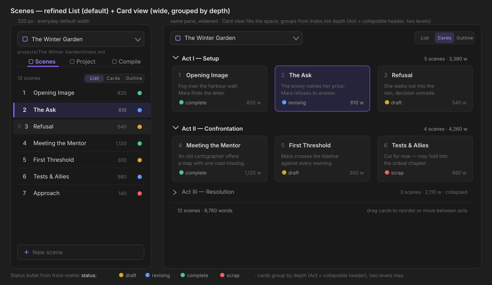
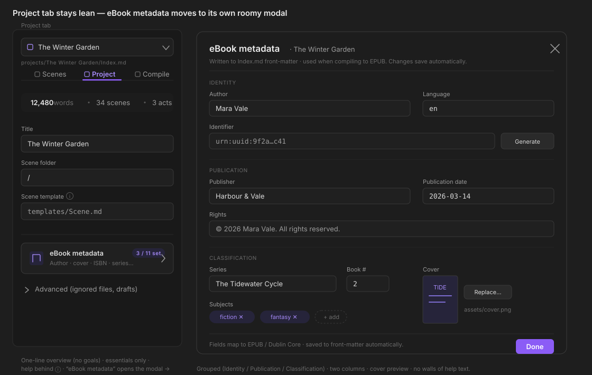
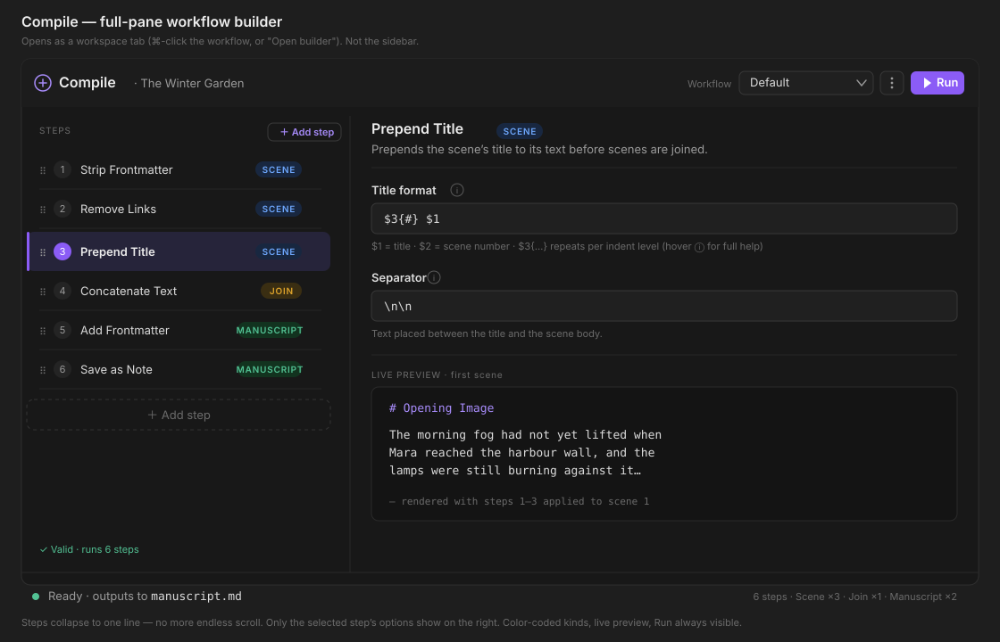
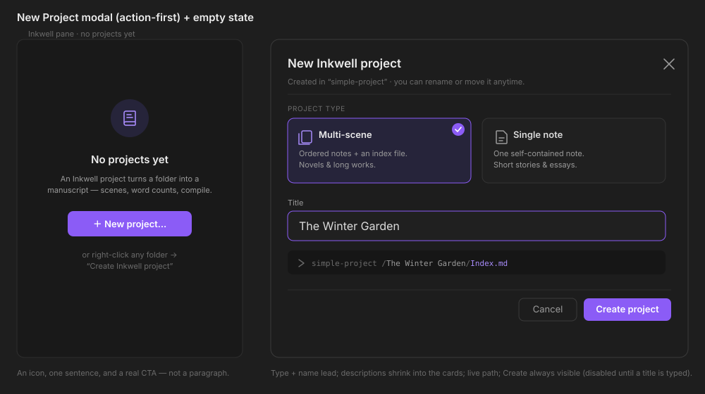

To-scale mockups in Obsidian's dark palette. Directions chosen: full-pane compile builder · Scenes List + Outline · eBook metadata in its own modal. These are wireframes to react to, not final visuals.
Per-row word count + colour-coded status (draft/revising/complete/scrap). The wide Card view groups scenes under collapsible Act headers (from Index.md depth, two levels) and fills the space.

Splits "glance" from "edit": the tab shows an overview stat and the essentials; the 11-field eBook form moves to a roomy, grouped two-column modal. Help hides behind ⓘ.

Your #1 pain. Steps collapse to one line (no endless scroll); only the selected step's options show on the right; color-coded kinds; live preview; Run always visible.

Type + title lead; the explanations shrink into selectable type cards; live path; Create always visible (disabled until named). The no-projects empty state gets an icon, one sentence, and a real CTA instead of a paragraph.
